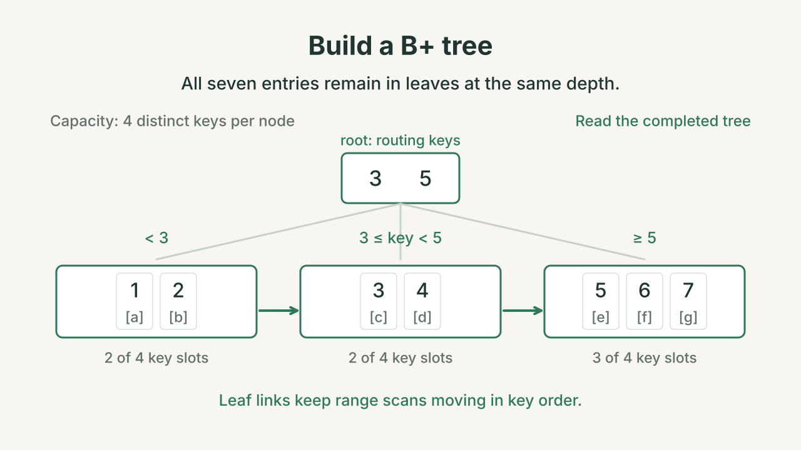

Tuesday October 20, 2026 · Midterm review
Trace a query through microdb
Step through the diagrams. Answer the practice questions at the end.
Exam scope and date
Midterm: Thursday October 22. Review Lectures 1–6 and Labs 1–6: the SQL front end, scans, records, buffers, storage, and B+ trees. Analytics, vectors, and the optional transaction/concurrency/optimizer material are outside this exam’s scope. These practice questions are ungraded.
1. Parsing and planning
Use students(sid, name, gpa, mid) and majors(mid2, dept). This walkthrough builds SELECT plans. Use the Lab 5 SQL terminal to execute your own query.
Ctrl/⌘ + Enter traces your query. Supports *, comma-separated fields and tables, and WHERE comparisons joined by AND. Step back freely to compare states.
Line numbers refer to sql_frontend.py. Docstrings are omitted. State shows the effect of the highlighted line. Each lexer-helper call is one step.
Token-recognition pattern
Characters being recognized
Tokens produced so far
Query parts collected so far
Scan plan under construction
Highlighted node = scan just created or selected as the root. Child scans provide input to their parent. Building this tree does not pull rows.
The browser trace mirrors the supplied Python SELECT parser and simple planner. It uses the two schemas above and does not execute rows. Lexer internals are optional: choose 2 · Parsing to start with tokens.
2. Statements, records, and buffers
Choose a statement. Step enters its storage calls. Next line finishes the next Python line. The highlighted line and its explanation distinguish work inside a call from a completed line.
SQL request represented by this code
Inside this call
A pin protects a frame from replacement. Dirty means its page needs writing. Unpinning leaves the page resident.
| Field | Slot offset | Size | RAM | File |
|---|
Compare every byte in this slot
Each cell shows a block-relative offset and the RAM / file bytes in hexadecimal. Highlighted differences have not yet reached the file.
Layout computed by the catalog
The stages continue from the previous stage’s final state. Reset rewinds only this demonstration. Snapshots are recorded from the lab’s Python storage code and completed reference scan operators. The browser replays them. Explicit bm.flush_all() checkpoints after CREATE, INSERT, and DELETE make file writes visible. A flush is not a transaction commit.
With a diagram button focused, use ← / → to step, Home to reset, and End to finish.
3. Join execution
SQL and Python plan
SELECT name, dept
FROM students JOIN majors ON mid = mid2
WHERE gpa > 35;students = TableScan(bm, fm, "students", students_layout)
majors = TableScan(bm, fm, "majors", majors_layout)
pairs = ProductScan(students, majors)
matched = SelectScan(pairs, Predicate(("mid", "=", F("mid2")),
("gpa", ">", 35)))
plan = ProjectScan(matched, ["name", "dept"])
try:
plan.before_first() # initialize both product cursors
while plan.next():
print(plan.get_val("name"), plan.get_val("dept"))
finally:
plan.close() # recursively closes both table scansF("mid2") reads the right row’s field. Plain "mid2" would compare mid with a string literal. The distinct field names let the product select the correct input.
Step through the plan. Click a slot to inspect its fields and bytes. Click an operator to see its job.
Operator details and the current call stack
Show every byte in this slot
Offsets are relative to the start of the block. Integers and string lengths use four bytes in little-endian order. Strings use UTF-8. Unused string capacity stays zero in this fresh example.
128-byte blocks: four 28-byte student slots or six 20-byte major slots. Field offsets come from each table’s catalog layout. Playback uses fixed Lab 4 data after DELETE and is independent of the other walkthroughs. It tracks buffer pins, not cache misses or disk reads. Displaying the three returned rows is a caller action. The product streams one pair at a time.
With a diagram button focused, use ← / → to step, Home to reset, or End to finish.
4. B+ trees
Split a leaf
Capacity: four distinct keys per node. Select Next to follow keys 1–7. Letters such as a represent row addresses.

Split the root
Start with keys 1–12. Insert 13. Step through the leaf split and the resulting root split.
![The overfull internal root [3, 5, 7, 9, 11] splits into [3, 5] and [9, 11] under new root [7]. Six linked leaves retain every key from 1 through 13.](../lecture-06/diagrams/a-root-splits.svg?v=ste-20261015)
Insert your own keys
Leaves contain the keys. Internal nodes guide the search. Green arrows link the leaves in order. This view hides the RID lists.
The GPA sequence is 39, 31, 37, 28, 36, 34. Each insertion shows the completed tree. Reset, manual insertion, or search stops an animation.
Practice questions
Choose one answer per question. Use the diagrams to check your choice. Open Check answer to see the correct choice and explanation.
Parsing and planning
-
Check answer
Correct answer: B.
The lexer produces tokens. The parser records field
name, tablestudents, and conditiongpa > 35. The planner buildsProjectScan(name) → SelectScan(gpa > 35) → TableScan(students). Planning builds the scans. Execution requests rows later. -
Check answer
Correct answer: D.
The root is
ProjectScan(name, dept). Its child isSelectScan(mid = mid2 AND gpa > 35). Selection reads fromProductScan, whose children scanstudentsandmajors. Product forms pairs. Selection rejects pairs that fail either condition.This parser uses comma-separated tables. The built-in Join two tables example adds
dept = 'ds'. The query here matches the join diagram.
Statements and buffers
-
Check answer
Correct answer: A.
The schemas are recorded in
table_catalog.tblandfield_catalog.tbl. CREATE records table and field metadata. INSERT adds the student rows in the next stage. -
Check answer
Correct answer: C.
The row occupies
students.tbl, block 1, slot 2. Its four-byte flag starts at block byte2 × 28 = 56. Deletion changes the flag from USED (1) to EMPTY (0). The field bytes remain. Other slots do not move. Later scans skip the EMPTY slot. -
Check answer
Correct answer: B.
Closing the scan releases its pin. The changed page can remain dirty in RAM. The file still contains its last written bytes. The explicit
bm.flush_all()call writes the dirty page. Unpinning alone does not flush or evict the page. A flush is not a transaction commit.
Joins and record slots
-
Check answer
Correct answer: A.
Six active students and three majors produce
6 × 3 = 18candidate pairs. Three pairs pass:(ada, ds),(cyd, ds), and(eli, stat). The deleted student contributes no pair. SQL withoutORDER BYdoes not guarantee the displayed order. -
Check answer
Correct answer: D.
Three calls return True, one for each result row. The fourth returns False when no matching rows remain. One root call can inspect several candidate pairs. These counters measure scan work. They do not count disk reads.
-
Check answer
Correct answer: C.
Each block holds 128 bytes. Each student slot occupies 28 bytes, including its flag. Four slots fit, leaving
128 − 4 × 28 = 16unused bytes. GPA starts 20 bytes into its slot. Slot 3’s GPA starts at block byte3 × 28 + 20 = 104.
B+ trees
-
Check answer
Correct answer: D.
The temporary overflow is
[1, 2, 3, 4, 5]. Split it into[1, 2]and[3, 4, 5]. Link the leaves. Copy separator 3 into a new root. Key 3 keeps its row-address list in the right leaf. The tree has two levels. -
Check answer
Correct answer: B.
The last leaf splits into
[9, 10]and[11, 12, 13]. Copying separator 11 into the full root causes another overflow. Move routing key 7 into a new root. Its internal children contain[3, 5]and[9, 11]. The tree has three levels. The leaf entry for key 7 remains in its leaf. -
Check answer
Correct answer: C.
Equality with separator 3 routes to leaf
[3, 4]. Return 3 and 4. Follow the next-leaf link to[5, 6, 7]. Return 5 and 6. Stop at 7 because it exceeds 6. The matching keys’ row-address lists identify the records to fetch. -
Check answer
Correct answer: A.
The widget displays each distinct key once, so the shape stays the same. The lab tree adds the new row address to the existing key’s list. That addition uses no extra distinct-key slot. It does not cause a split in this model.